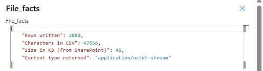

- Power Automate
- Level 5 · Performance and scale · 5 of 6
Working with large files
Flows often create a report, copy an attachment or read a CSV. Small files just work. Larger ones run into limits on message size and on how much content a flow may move in a period of time. Knowing those limits, and how file content travels through a flow, avoids surprises.
A 2,000-row CSV, end to end
The demo builds 2,000 rows, turns them into CSV with Create CSV table, saves the file to a SharePoint library and reads it back.


length(body('Create_CSV_table'))| Piece | What it does |
|---|---|
body('Create_CSV_table') | The CSV as one long text. |
length(...) | The number of characters: 47,556 here, which is about 46 KB. |
How file content travels
File content moves between actions as $content-type plus $content in Base64. Base64 is about a third larger than the original file, so a file uses more of the flow's limits than its size on disk suggests. To read a text file as text, wrap it: base64ToString(body('Get_file_content')?['$content']).
Limits to know
| Limit | Value (official docs, at time of writing) |
|---|---|
| Message size without chunking | 100 MB |
| Content throughput per 5 minutes | 120 MB on the Low performance profile, 1.2 GB on others |
| Content throughput per 24 hours | 200 MB (Low), 2 GB (Medium), 10 GB (High) |
Some connector actions support chunking (a setting called Allow chunking), which splits a large transfer into parts so it can pass the message limit.
New to this? Start from the basics optional
Base64: a way of writing binary data as plain text so it can travel inside JSON.
Chunking: sending a large file in several smaller pieces.
Performance profile: Low, Medium or High, set by the flow owner's licence. It decides several throughput limits.
Build it step by step optional
- Build the content (for example Create CSV table or Create HTML table).
- Use SharePoint Create file or OneDrive Create file with that content and a file name such as
concat('report-', utcNow('yyyyMMdd'), '.csv'). - To read it, use Get file content and convert with
base64ToString()if it is text. - For big files, open the action's Settings and turn on chunking where the action offers it.
- If files keep growing, move the work to a connector made for bulk data instead of passing the content through the flow.
Common mistakes
- Reading a CSV and expecting text. The content comes back as Base64 with a binary type.
- Copying large files through Compose or variables. Each copy adds to throughput and makes run history slow to open.
- Emailing big attachments. Mail services have their own, much smaller, limits. Share a link instead.